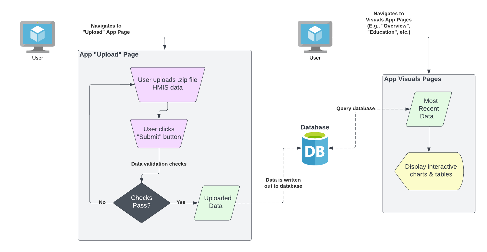

Data
data.RmdSource
The data within this application are collected by each grantee in a format compliant with the HMIS Data Standards. This data originates from one of a few separate HMIS databases in the State. The HMIS databases have the capability to query the database and export a .zip file. This .zip file can be uploaded into the COHHIO Youth Data Dashboard app via the app’s “Upload” page.
Architecture
The following architecture diagram shows how the app can be used for both uploading (.zip file) HMIS data, and visualizing previously uploaded HMIS data.

Requirements
The following requirements must be satisfied in order for the .zip file to be successfully processed and its data written to the database:
- The file must be .zip extension
- The .zip file must contain (at least) the following .csv files
- Client.csv
- CurrentLivingSituation.csv
- Disabilities.csv
- EmploymentEducation.csv
- Enrollment.csv
- Exit.csv
- Export.csv
- Funder.csv
- HealthAndDV.csv
- IncomeBenefits.csv
- Organization.csv
- Project.csv
- ProjectCoC.csv
- Services.csv
- The Organization.csv file must contain exactly one (1) organization
- The column naming conventions must match the expectations of the ryha database